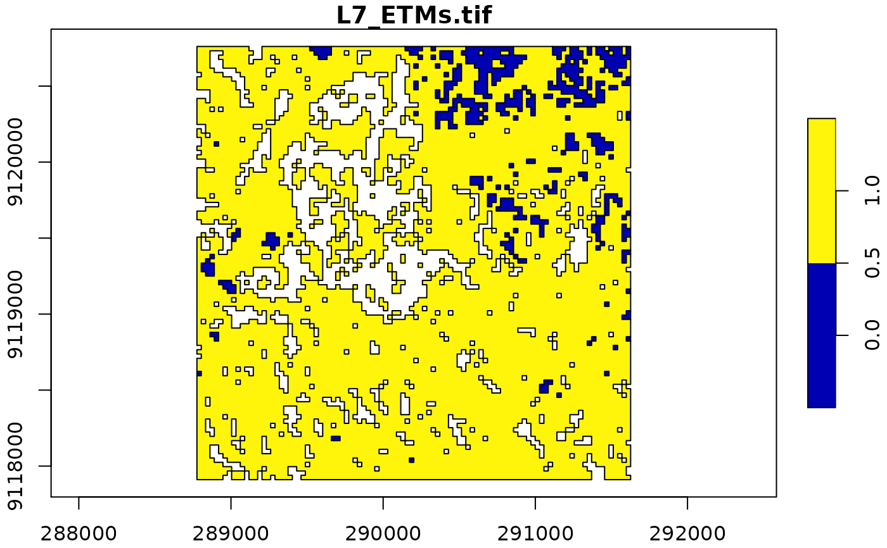
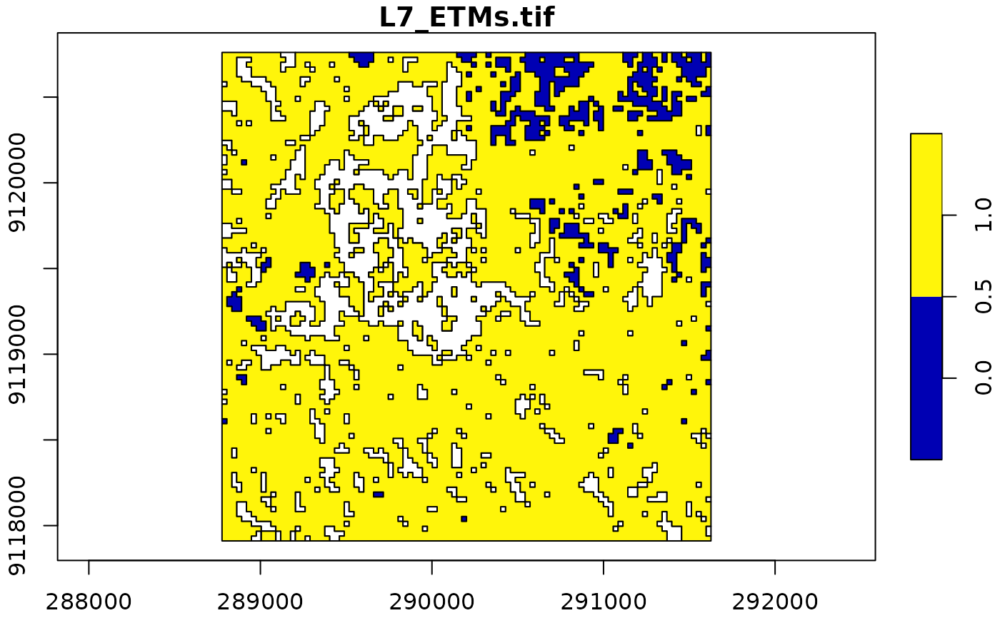

Convert stars object into an sf object
Usage
# S3 method for class 'stars'
st_as_sfc(x, ..., as_points, which = seq_len(prod(dim(x)[1:2])))
# S3 method for class 'stars'
st_as_sf(
x,
...,
as_points = FALSE,
merge = FALSE,
na.rm = TRUE,
use_integer = is.logical(x[[1]]) || is.integer(x[[1]]),
long = FALSE,
connect8 = FALSE
)
# S3 method for class 'stars_proxy'
st_as_sf(x, ..., downsample = 0)Arguments
- x
object of class
stars- ...
ignored
- as_points
logical; should cells be converted to points or to polygons? See details.
- which
linear index of cells to keep (this argument is not recommended to be used)
- merge
logical; if
TRUE, cells with identical values are merged (usingGDAL_PolygonizeorGDAL_FPolygonize); ifFALSE, a polygon for each raster cell is returned; see details- na.rm
logical; should missing valued cells be removed, or also be converted to features?
- use_integer
(relevant only if
mergeisTRUE): ifTRUE, before polygonizing values are rounded to 32-bits signed integer values (GDALPolygonize), otherwise they are converted to 32-bit floating point values (GDALFPolygonize).- long
logical; if
TRUE, return a long table formsf, with geometries and other dimensions recycled- connect8
logical; if
TRUE, use 8 connectedness. Otherwise the 4 connectedness algorithm will be applied.- downsample
see st_as_stars
Details
If merge is TRUE, only the first attribute is converted into an sf object. If na.rm is FALSE, areas with NA values are also written out as polygons. Note that the resulting polygons are typically invalid, and use st_make_valid to create valid polygons out of them.
Examples
tif = system.file("tif/L7_ETMs.tif", package = "stars")
x = read_stars(tif)
x = x[,1:100,1:100,6] # subset of a band with lower values in it
x[[1]][x[[1]] < 30] = NA # set lower values to NA
x[[1]] = x[[1]] < 100 # make the rest binary
x
#> stars object with 3 dimensions and 1 attribute
#> attribute(s):
#> L7_ETMs.tif
#> Mode :logical
#> FALSE:525
#> TRUE :7665
#> NA's :1810
#> dimension(s):
#> from to offset delta refsys point x/y
#> x 1 100 288776 28.5 SIRGAS 2000 / UTM zone 25S FALSE [x]
#> y 1 100 9120761 -28.5 SIRGAS 2000 / UTM zone 25S FALSE [y]
#> band 6 6 NA NA NA NA
(p = st_as_sf(x)) # removes NA areas
#> Simple feature collection with 8190 features and 1 field
#> Geometry type: POLYGON
#> Dimension: XY
#> Bounding box: xmin: 288776.3 ymin: 9117911 xmax: 291626.3 ymax: 9120761
#> Projected CRS: SIRGAS 2000 / UTM zone 25S
#> First 10 features:
#> V1 geometry
#> 1 TRUE POLYGON ((288776.3 9120761,...
#> 2 TRUE POLYGON ((288804.8 9120761,...
#> 3 TRUE POLYGON ((288833.3 9120761,...
#> 4 TRUE POLYGON ((288861.8 9120761,...
#> 5 TRUE POLYGON ((288890.3 9120761,...
#> 6 TRUE POLYGON ((288918.8 9120761,...
#> 7 TRUE POLYGON ((288947.3 9120761,...
#> 8 TRUE POLYGON ((288975.8 9120761,...
#> 9 TRUE POLYGON ((289004.3 9120761,...
#> 10 TRUE POLYGON ((289032.8 9120761,...
(p = st_as_sf(x[,,,1], merge = TRUE)) # glues polygons together
#> Simple feature collection with 155 features and 1 field
#> Geometry type: POLYGON
#> Dimension: XY
#> Bounding box: xmin: 288776.3 ymin: 9117911 xmax: 291626.3 ymax: 9120761
#> Projected CRS: SIRGAS 2000 / UTM zone 25S
#> First 10 features:
#> L7_ETMs.tif geometry
#> 1 0 POLYGON ((290315.3 9120761,...
#> 2 1 POLYGON ((291455.3 9120761,...
#> 3 0 POLYGON ((290144.3 9120761,...
#> 4 0 POLYGON ((291341.3 9120761,...
#> 5 1 POLYGON ((291569.3 9120761,...
#> 6 1 POLYGON ((290628.8 9120732,...
#> 7 1 POLYGON ((290771.3 9120732,...
#> 8 1 POLYGON ((291483.8 9120732,...
#> 9 0 POLYGON ((289517.3 9120761,...
#> 10 0 POLYGON ((291113.3 9120761,...
all(st_is_valid(p)) # not all valid, see details
#> [1] TRUE
plot(p, axes = TRUE)

(p = st_as_sf(x, na.rm = FALSE, merge = TRUE)) # includes polygons with NA values
#> Simple feature collection with 380 features and 1 field
#> Geometry type: POLYGON
#> Dimension: XY
#> Bounding box: xmin: 288776.3 ymin: 9117911 xmax: 291626.3 ymax: 9120761
#> Projected CRS: SIRGAS 2000 / UTM zone 25S
#> First 10 features:
#> L7_ETMs.tif geometry
#> 1 0 POLYGON ((290315.3 9120761,...
#> 2 1 POLYGON ((291455.3 9120761,...
#> 3 0 POLYGON ((290144.3 9120761,...
#> 4 0 POLYGON ((291341.3 9120761,...
#> 5 1 POLYGON ((291569.3 9120761,...
#> 6 NA POLYGON ((289745.3 9120732,...
#> 7 1 POLYGON ((290628.8 9120732,...
#> 8 1 POLYGON ((290771.3 9120732,...
#> 9 1 POLYGON ((291483.8 9120732,...
#> 10 0 POLYGON ((289517.3 9120761,...
plot(p, axes = TRUE)
